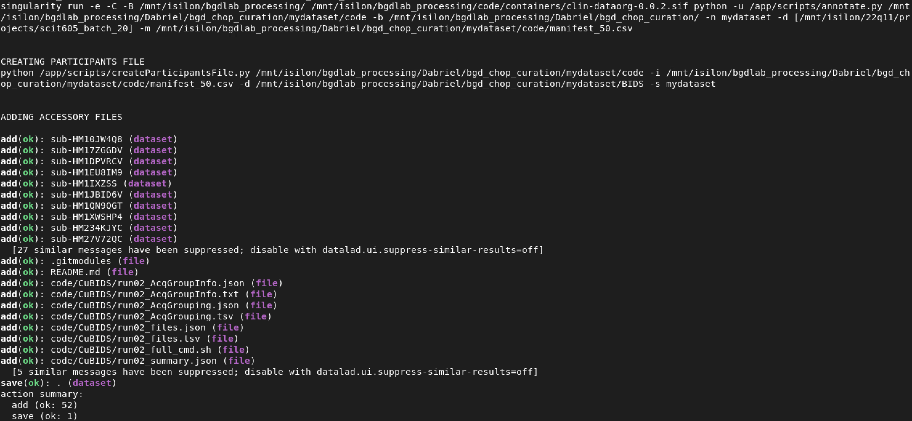

Chapter 8 Annotation
Now for the final stage we annotate the dataset creating the data summary and data description files required by BIDS.
8.1 Main Command
Output is the singularity command run to create the participants.tsv. Then static copies of the participants.json and scans.json are copied from the container. The README.md and CHANGES are customized to the dataset based on the list of dicoms, input manifest, and final subject/session numbers from the participants.tsv. Dataset is saved after changes are made automatically. Note that this isn’t a recursive datalad save, these changes are only registered to the top level BIDS dataset since the individual sessions aren’t being changed.

We don’t follow all the rules per BIDS specification but we still need to have all the required files. The only file we currently don’t make is the sessions.tsv table that goes into each subject directory.
📁 sub-HM2MOR40C
├── ses-499739009000procId004921ageDays
├── 📁 anat
├── 📄 sub-HM2MOR40C_ses-499739009000procId004921ageDays_scans.tsv ✅
└── ...
└── 📄 sub-HM2MOR40C_sessions.tsv ❌In the future this can be changed so that we are more accurately following BIDS longitudinal standards
Our example participants fileFigure 8.1: participants file
Here is the README.md where you will need to change the TO_DO to your name as the curator of the dataset (or multiple names if applicable).
## [1] "# README"
## [2] "## CURATION"
## [3] "---"
## [4] "Curated By: **TO_DO**"
## [5] "Date: 2026-03-17"
## [6] "Curated with docker://dabrielz/clin-dataorg:0.0.2."
## [7] ""
## [8] "[](https://datalad.org).This is a [DataLad](https://www.datalad.org/) dataset. See [Using Datalad](#datalad-datasets-and-how-to-use-them) for more info."
## [9] ""
## [10] "## SOURCE"
## [11] "---"
## [12] "Dicoms: `[\"['/mnt/isilon/22q11/projects/scit605_batch_20']\"]`"
## [13] "Manifest: `/mnt/isilon/bgdlab_processing/Dabriel/bgd_chop_curation/mydataset/code/manifest_50.csv`"
## [14] ""
## [15] "## SUMMARY"
## [16] "---"
## [17] "**mydataset** contained a request for 49 subjects and 50 sessions."
## [18] "37 subjects and 38 sessions were delivered and curated in this directory."
## [19] "2 subject have multiple sessions."
## [20] "13 standardized MPR scans for 6 subjects across 7 sessions."
## [21] "DWI data is present for 19 subjects across 20 sessions."
## [22] ""
## [23] ""
## [24] ""
## [25] "## DEMOGRAPHICS"
## [26] "---"
## [27] "Includes:"
## [28] "* 22 Males"
## [29] "* 15 Females"
## [30] ""
## [31] "### Age Summary"
## [32] "| age_category | Subjects | Sessions |"
## [33] "|:---------------|-----------:|-----------:|"
## [34] "| Adolescent | 16 | 16 |"
## [35] "| Elementary | 7 | 7 |"
## [36] "| Neonate | 1 | 1 |"
## [37] "| Pre-K | 4 | 4 |"
## [38] "| Toddler | 10 | 10 |"
## [39] ""
## [40] ""
## [41] "### Race/Ethnicity Summary"
## [42] "| race | Subjects | Sessions |"
## [43] "|:--------------------------|-----------:|-----------:|"
## [44] "| Asian | 3 | 3 |"
## [45] "| Black or African American | 5 | 5 |"
## [46] "| Hispanic or Latino | 3 | 3 |"
## [47] "| Other | 1 | 1 |"
## [48] "| White | 25 | 26 |"
## [49] ""
## [50] ""
## [51] "### Site Summary"
## [52] "| | Subjects | Sessions |"
## [53] "|:------------------------------------------------|-----------:|-----------:|"
## [54] "| (\"Children's Hospital of Philadelphia\", 25408) | 1 | 1 |"
## [55] "| (\"Children's Hospital of Philadelphia\", 35008) | 4 | 4 |"
## [56] "| (\"Children's Hospital of Philadelphia\", 35014) | 1 | 1 |"
## [57] "| (\"Children's Hospital of Philadelphia\", 37049) | 1 | 1 |"
## [58] "| (\"Children's Hospital of Philadelphia\", 40156) | 3 | 3 |"
## [59] "| (\"Children's Hospital of Philadelphia\", 40180) | 1 | 1 |"
## [60] "| (\"Children's Hospital of Philadelphia\", 45195) | 1 | 1 |"
## [61] "| (\"Children's Hospital of Philadelphia\", 45886) | 3 | 3 |"
## [62] "| (\"Children's Hospital of Philadelphia\", 46005) | 4 | 4 |"
## [63] "| (\"Children's Hospital of Philadelphia\", 67016) | 7 | 7 |"
## [64] "| (\"Children's Hospital of Philadelphia\", 69664) | 1 | 1 |"
## [65] "| (\"Children's Hospital of Philadelphia\", 166292) | 1 | 1 |"
## [66] "| (\"Children's Hospital of Philadelphia\", 176559) | 4 | 4 |"
## [67] "| (\"Children's Hospital of Philadelphia\", 176561) | 1 | 1 |"
## [68] "| ('abington mri', 176572) | 1 | 1 |"
## [69] "| ('abington spe', 176572) | 1 | 1 |"
## [70] "| ('bgr mri', 176561) | 3 | 3 |"
## [71] ""
## [72] ""
## [73] "## USING DATALAD"
## [74] ""
## [75] "Datalad provides fine-grained data access down to the level of individual files, and allows for tracking future updates. In order to use this repository for data retrieval, [DataLad](https://www.datalad.org/) is required. It is a free and open source command line tool, available for all major operating systems, and builds up on Git and [git-annex](https://git-annex.branchable.com/) to allow sharing, synchronizing, and version controlling collections of large files. You can find information on how to install DataLad at [handbook.datalad.org/en/latest/intro/installation.html](http://handbook.datalad.org/en/latest/intro/installation.html)."
## [76] ""
## [77] "### Get the dataset"
## [78] ""
## [79] "#### Quickest method"
## [80] "Simply copy the data over without symlinks, breaking connection to Datalad and tracking."
## [81] ""
## [82] "```"
## [83] "cp -R -L <BIDS> </path/to/destination>"
## [84] "```"
## [85] ""
## [86] "#### Datalad method"
## [87] "A DataLad dataset can be `cloned` by running the following commands"
## [88] ""
## [89] "```"
## [90] "datalad clone <BIDS>"
## [91] "datalad get </path/to/directory/or/file>"
## [92] "```"
## [93] ""
## [94] "Once a dataset is cloned, it is a light-weight directory on your local machine. At this point, it contains only small metadata and information on the identity of the files in the dataset, but not actual *content* of the (sometimes large) data files. After cloning a dataset, you can retrieve file contents by running `get`. This command will trigger a download of the files, directories, or subdatasets you have specified."
## [95] ""
## [96] "DataLad datasets can contain other datasets, so called *subdatasets*. If you clone the top-level dataset, subdatasets do not yet contain metadata and information on the identity of files, but appear to be empty directories. In order to retrieve file availability metadata in subdatasets, run"
## [97] ""
## [98] "```"
## [99] "datalad get -n <path/to/subdataset>"
## [100] "```"
## [101] ""
## [102] "Afterwards, you can browse the retrieved metadata to find out about subdataset contents, and retrieve individual files with `datalad get`. If you use `datalad get <path/to/subdataset>`, all contents of the subdataset will be downloaded at once."
## [103] ""
## [104] "### Stay up-to-date"
## [105] ""
## [106] "DataLad datasets can be updated. The command `datalad update` will *fetch* updates and store them on a different branch (by default `remotes/origin/master`). Running"
## [107] ""
## [108] "```"
## [109] "datalad update --merge"
## [110] "```"
## [111] ""
## [112] "will *pull* available updates and integrate them in one go."
## [113] ""
## [114] "### Find out what has been done"
## [115] ""
## [116] "DataLad datasets contain their history in the ``git log``. By running ``git log`` (or a tool that displays Git history) in the dataset or on specific files, you can find out what has been done to the dataset or to individual files by whom, and when."
## [117] ""
## [118] "### More information"
## [119] ""
## [120] "More information on DataLad and how to use it can be found in the DataLad Handbook at [handbook.datalad.org](http://handbook.datalad.org/en/latest/index.html). The chapter \"DataLad datasets\" can help you to familiarize yourself with the concept of a dataset."Here is the CHANGES where only a single commit message is written. If you have to change anything in the dataset, it should be noted in this document (along with saving the changes in datalad.)
## [1] "1.0.0 2026-03-17" "- Initial release."